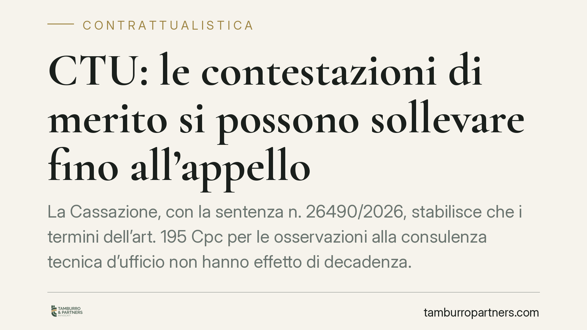

CTU: le contestazioni di merito si possono sollevare fino all'appello
La Cassazione, con la sentenza n. 26490/2026, stabilisce che i termini dell'art. 195 Cpc per le osservazioni alla consulenza tecnica d'ufficio non hanno effetto di decadenza. Le contestazioni valutative sul merito della perizia possono essere avanzate anche in comparsa conclusionale e in appello, a condizione che restino difese e non introducano fatti, domande, eccezioni o prove nuovi.

Il principio affermato dalla Cassazione
La Seconda Sezione Civile della Corte di Cassazione, con la sentenza n. 26490/2026, interviene su un tema che tocca da vicino chiunque affronti un contenzioso in cui il giudice disponga una consulenza tecnica d'ufficio (CTU): dalle liti condominiali sulle tabelle millesimali alle controversie contrattuali su difetti dell'opera o valutazioni di stima.
La questione è semplice nei termini, delicata nelle conseguenze. L'art. 195, comma 3, del Codice di procedura civile prevede che il giudice fissi alle parti un termine per depositare osservazioni sulla bozza di relazione del consulente, prima che questa diventi definitiva. Ci si chiedeva: chi non deposita osservazioni entro quel termine perde per sempre la possibilità di criticare la perizia? La Corte risponde di no.
Inquadramento normativo
Il nodo riguarda la natura del termine previsto dall'art. 195 Cpc. Un termine può essere perentorio (la sua scadenza fa decadere dal potere di compiere l'atto) oppure ordinatorio (la scadenza non produce preclusioni automatiche). La legge, quando vuole la perentorietà, lo dice espressamente.
La Cassazione osserva che il termine per le osservazioni alla CTU non è qualificato come perentorio dalla norma. Di conseguenza, la sua scadenza non chiude la possibilità di contestare la consulenza. Il mancato deposito delle osservazioni può al più rilevare come eventuale nullità sanabile ai sensi degli artt. 157 e 161 Cpc, ma non trasforma la relazione in un dato processuale incontestabile.
Resta fermo, però, un confine preciso dettato dall'art. 345 Cpc sul divieto di novità in appello. Le contestazioni ammesse anche tardivamente sono soltanto le mere difese, cioè gli argomenti che criticano il ragionamento tecnico del consulente. Non sono ammesse, invece, nuove domande, nuove eccezioni in senso stretto, nuovi fatti o nuove prove: questi restano soggetti alle preclusioni ordinarie.
Implicazioni pratiche
La distinzione è il cuore della decisione. Un conto è dire al giudice d'appello che il CTU ha applicato un criterio di calcolo errato, ha ignorato un documento già in atti o ha tratto conclusioni illogiche dalle premesse: questa è una difesa valutativa, sempre proponibile. Altro conto è introdurre un fatto mai allegato prima, chiedere una nuova prova testimoniale o sollevare un'eccezione nuova per smontare la perizia: qui scatta la preclusione.
Per chi è parte in un giudizio condominiale o contrattuale, il messaggio è duplice. Da un lato, non tutto è perduto se le osservazioni tecniche non sono state depositate nei termini: le critiche di merito restano spendibili nelle fasi successive e persino in appello. Dall'altro, confidare in questo recupero è una strategia rischiosa. Le osservazioni tempestive consentono al CTU di correggere la bozza prima che diventi definitiva, mentre la contestazione successiva opera solo come critica al prodotto finito, con minore efficacia persuasiva.
Nel contenzioso contrattuale, dove la CTU spesso quantifica danni, vizi o inadempimenti, e nelle liti condominiali, dove la perizia incide su ripartizioni di spesa e responsabilità su parti comuni, la qualità e la tempestività del contraddittorio tecnico restano fattori decisivi dell'esito.
Cosa fare in concreto
- Deposita sempre le osservazioni nei termini dell'art. 195 Cpc: è il momento in cui la critica può ancora modificare la relazione, non solo contestarla.
- Distingui le critiche di merito dalle novità: verifica che gli argomenti restino difese valutative e non introducano fatti, domande, eccezioni o prove nuovi, altrimenti rischi l'inammissibilità.
- Affianca un consulente tecnico di parte fin dalle operazioni peritali, così da costruire tempestivamente le osservazioni su basi tecniche solide.
- Conserva traccia documentale di tutti gli elementi già agli atti su cui fondi la critica: in appello potrai valorizzarli senza incorrere nel divieto di novità.
- Valuta con il legale la strategia d'impugnazione: la riproponibilità delle censure tecniche va calibrata caso per caso rispetto al contenuto della sentenza.
La pronuncia conferma un approccio sostanzialistico: le preclusioni tutelano l'ordinato svolgimento del processo, non impediscono la discussione sul merito tecnico di una perizia. Consigliamo comunque di non affidarsi al recupero tardivo e di presidiare il contraddittorio tecnico fin dalle prime battute.
---
*Contributo informativo a cura di Tamburro & Partners - Avv. Giuseppe Tamburro. Non costituisce parere legale.*
Ogni contratto ha il suo equilibrio.
Se vuoi una revisione delle clausole o una redazione su misura, scrivi allo studio. Ti rispondiamo entro un giorno lavorativo.